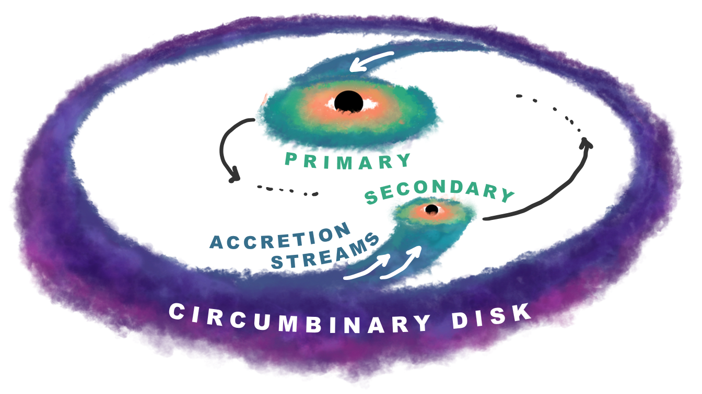
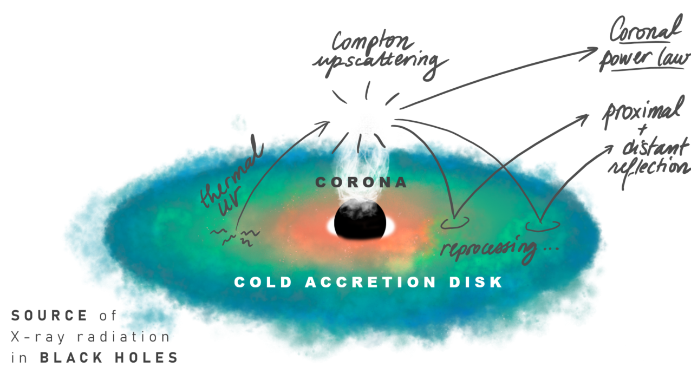
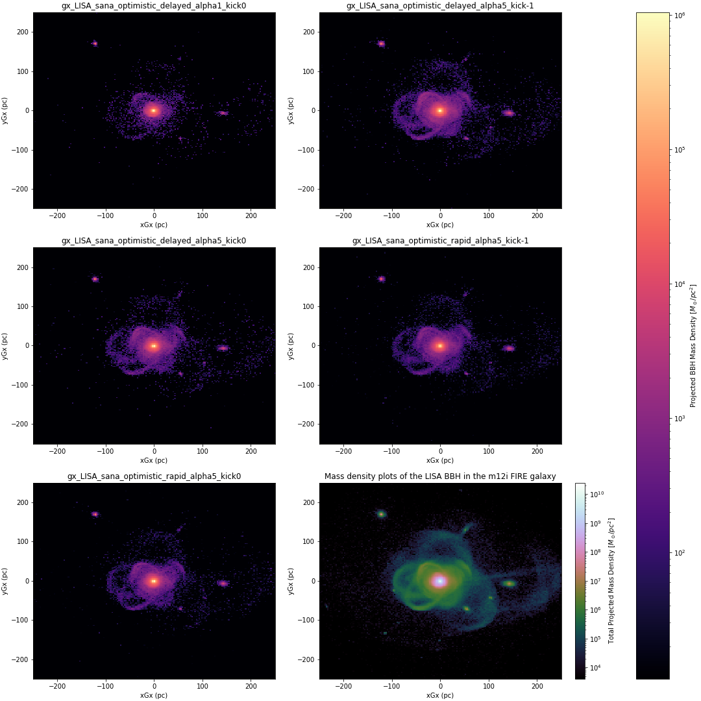
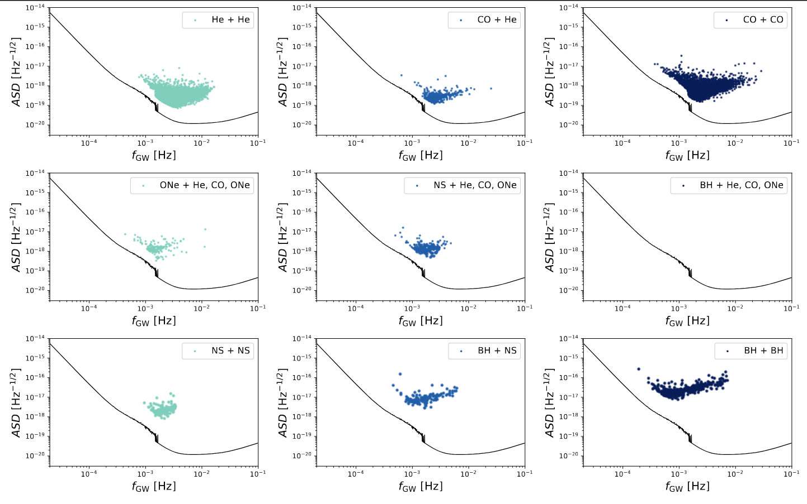
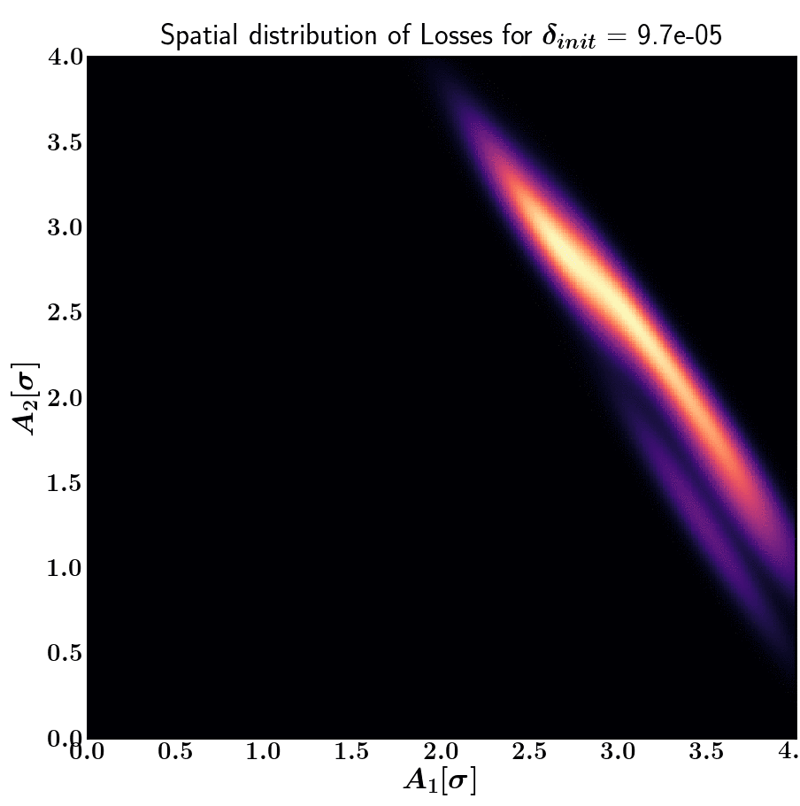
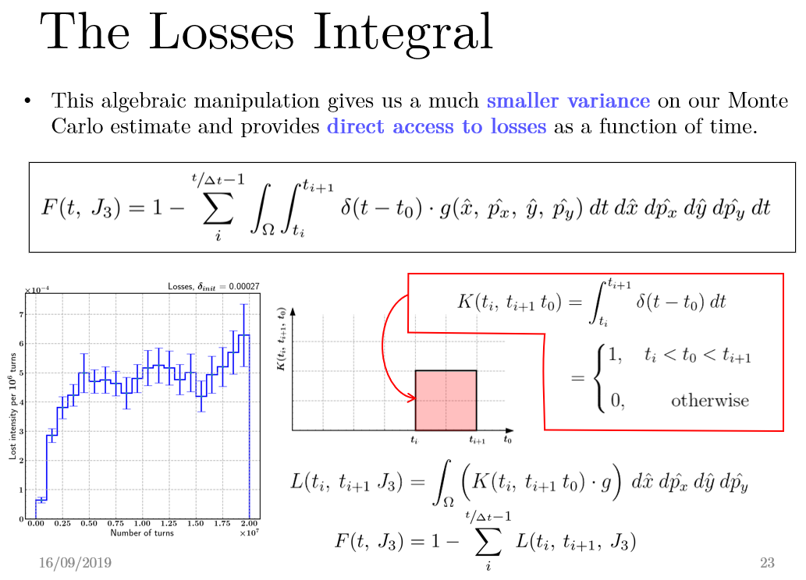

research
My thesis work is on modeling the composite X-ray reflection spectra originating from the two 'mini' accretion disks tethered to massive black holes in a close binary. I'm especially interested in using binary-specific signatures to find and characterize these black holes, and that can be used alongside low-frequency gravitational waves detectable by either LISA (Laser Interferometry Space Antenna) or the PTAs (Pulsar Timing Arrays).

x-ray reflection spectra of supermassive black hole binaries
I use the relativistic reflection model relxill in xspec
to compute the composite reflection spectrum of accreting
supermassive black hole binaries.
My first paper, titled "X-ray
Reflection Signatures of Supermassive Black Hole Binaries," investigates the impact of two binary-induced
effects on the composite X-ray reflection: the Doppler oscillations of each spectrum relative to the other
due to the orbital motion of the binary and preferential accretion in unequal mass binaries, which results
in the less massive of the two black holes capturing the larger portion of the circumbinary gas inflow.
Mass accretion rate, $\dot{M}$, translates to luminosity pretty straightforwardly -- but also to the degree
of photoionization of the accretion disks, which has a whole slew of downstream effects on the reflection spectrum.
In practice, what this means is that you can expect the reflection spectrum of a binary to be a confusing
jumble of reflection features that can no longer pass credibly as that of a single black hole. This effect can
be subtle, but one thing isn't: the periodic Doppler shifting will be an unequivocal smoking gun for the presence of
a binary.

The next logical question is whether we can hope to detect these binary signatures sometime in the near future.
We simulated 100 ks observations of our very spectra, in either PTA or LISA mass ranges,
with 4 well-studied X-ray mission concepts (NewAthena, AXIS, STROBE-X, and HEX-P) to see which ones could
pick up on the binarity of our synthetic sources.
Before graduate school, I worked with Shane Larson at CIERA (Northwestern University) on galactic compact binaries that will (or will not!) be detectable by LISA.

milky way compact binaries in the lisa frequency band
there, I used Katie Breivik's compact stellar binary population synthesis code
COSMIC
to characterize the non-resolvable background noise from galactic compact binaries
and its impact on LISA's sensitivity curve.
We know that the most numerous
gravitational wave sources in the nearby Universe are, by far, galactic white dwarf
binaries. Their numbers are such that LISA's ability to properly hear sources in that
particular frequency band will be seriously hampered. Though we cannot hope to resolve
any of those as individual sources (save for a very select few), we could
infer their numbers and parameter distribution from the general tone and loudness of
that background noise. Using that, we hope to be able to constrain some key processes
of stellar evolution and compact object formation!
Talk about turning bad news into an advantage.

Since I was already there, I also spent time investigating exactly how much key binary stellar evolution model parameters (such as natal kicks, or stability of common envelope mass transfer, or initial mass functions) would affect the expected number of sources of each type (i.e. BH, NS, and sub-types of WDs) that would be individually detectable by LISA -- with a focus on BH-BH binaries.

I was also briefly a summer student in 2019 at CERN's Beams and Accelerator Physics department, working with Gianni Iadarola and Kostas Paraschou.

beam luminosity loss in the large hadron collider
I ran particle tracking simulations on their high performance computing cluster to study the evolution of beam luminosity loss in the Large Hadron Collider (LHC) in the presence of complex non-linear beam-beam effects.
The problem we set out to answer was simple: the LHC experiences unexplained luminosity loss, especially in the first few millions of turns -- that could ootentially be attributable to non-linear interactions between the charged particles, which is impossible to ascertain analytically. Instead, you must run massive Monte Carlo simulations of a typical LHC run, and keep track of how many particles veered off-course.

back